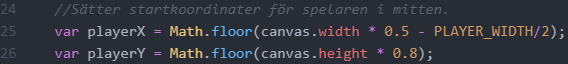
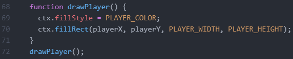
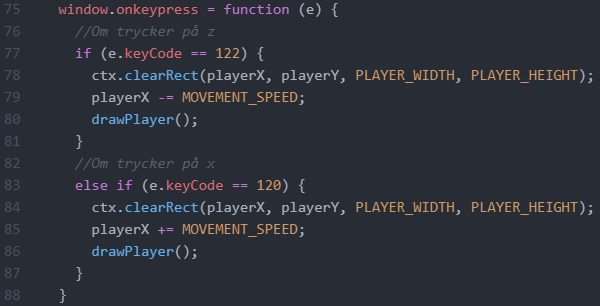

Kodgenomgång
Här kommer jag gå igenom koden från spelet bit för bit. Nedan kommer jag förklara allt bit för bit, med bilder från koden.
Importera canvas

Först importeras de 2 canvaselementen, och de döps till canvas, respektive ctx, vilket är standardnamn för dessa konstanter. De kommer sedan användas för att rita ut grafiken i canvas-fönstret.
Deklarera konstanter och variabler
Efter det så deklarerar vi de konstanter som kommer användas senare i programmet. Konstanter skrivs alla med stora bokstäver, vilket även underlättar läsbarheten för koden. Det som är bra med att ha alla konstantdeklarationer i början av koden är att det gör det enkelt att justera dess värden senare. Om vi till exempel vill att spelaren ska kunna röra sig snabbare behöver vi bara öka värdet för konstanten MOVEMENT_SPEED. Vill vi göra bollen lite större ökar vi bara värdet av BOLL_SIZE. Att ha värdena i konstanter gör det även lättare för oss att läsa koden senare, då ifall vi till exempel skriver 10 inte har någon aning om varför, medans om vi läser BALL_SIZE istället så förstår vi direkt vad som menas.
Sedan har vi en liten enkel uträkning som sätter startkoordinaterna för spelaren. Detta för att spelaren alltid ska ha samma relativa plats, även om vi minskar eller förstorar canvas-fönstret.

Vi sätter även startkoordinater för bollen, samt ett startvärde för hur bollen ska röra sig i X och Y-rikting.
Sist så initeras en integer samt 3 arrayer för att kunna hantera de block som kommer skapas senare. Värdet på blockY anger i vilken Y-höjd som den första arrayens block ska genereras.
Definiera Block-klassen
Här definieras projektets enda klass, som heter Block. Det är senare den vi kommer skapa instanser av när vi genererar just block. Varje block har 4 egenskaper som anges i dess konstruktor, egenskaperna x, y, width och height. Dessa kommer sedan få olika värden för de olika instanserna vi skapar av klassen. I konstruktorn så avrundas även alla talen till heltal, detta för att undvika buggar, då bollen enbart rör sig 1 heltalskoordinat åt gången.
Skapa block
![function drawBlock(layer, amount) {
ctx.fillStyle = BLOCK_COLOR;
let blockWidth = (canvas.width - BLOCK_GAP) / amount - BLOCK_GAP;
let blockX = BLOCK_GAP;
for (i = 0; i < amount; i++) {
ctx.fillRect(blockX, blockY, blockWidth, BLOCK_HEIGHT);
blockX += blockWidth + BLOCK_GAP;
layer.push(new Block(blockX, blockY, blockWidth, BLOCK_HEIGHT));
}
blockY += BLOCK_HEIGHT + BLOCK_GAP;
}
//Kör funktionerna för varje array
drawBlock(blockLayer1, BLOCK1_AMOUNT);
drawBlock(blockLayer2, BLOCK2_AMOUNT);
drawBlock(blockLayer3, BLOCK3_AMOUNT);](../images/kod7.png)
Denna delen skapar blocken. Den använder sig av en funktion som heter
drawBlock(). Den tar in 2 parametrar, layer och block, där layer är en
array för ett lager och amount är en integer för antalet block som ska
skapas på den raden. Först sätts färgen som ska ritas ut till konstanten
BLOCK_COLOR. Sedan räknas bredden på hur bred varje block för raden
behöver vara genom att dela bredden på fönstret med antalet block, och
lämna plats för lite utrymme mellan varje block. blockX variablen sätts
så att den börjar skapa block med lite mellanrum mellan kanten.
Sedan körs en for-loop som ritar ut ett block, skapar en ny instance av
Block-klassen för det block som ritats ut och sist uppdaterar
x-koordinaten för nästa block som ska ritas. I slutet av funktionen
uppdateras blockY till det värde där nästa rad av block ska ritas ut.
Sedan kör vi alla funktioner för varje blocklager, med dess motsvarande
array och BLOCK*_AMOUNT konstant i parametern.
Spelaren
Denna funktion används för att rita ut spelaren och är väldigt enkel. Först suddas den förre bilden av rpelaren ut. Sedan sätts ritfärgen till spelarens färg, sedan ritas spelaren ut på dess nuvarande koordinater med den storlek som anges i konstanterna. Sedan ritas spelaren ut direkt, så att den är utritad så fort spelet startats.
Här skapas en funktion som körs varje gång användaren trycker ner en tangent. Först körs en if-sats som kollar ifall tangenten som tryckts ner har keyCode-värdet 122 (alltså om tangenten som tryckts ner är 'z'-tangenten). I så fall minskas spelarens x-värde med mängden av konstanten MOVEMENT_SPEED. Sedan körs drawPlayer, vilket gör att spelaren flyttar till vänster. Sedan körs en else if-sats som kollar ifall 'x'-tangenten tryckts ner, där koden är likadan, utom att spelaren flyttas till höger istället.
Ta sönder ett block

Här skapas en funktion som heter breakBlock() som senare kommer att användas för att ta sönder ett block när det är träffat. Det tar in en instance av Block i sin parameter. Först så suddar det ut det ritade blocket, och sedan så sätter den blockets x-koordinat till -100 för att bollen senare inte ska kunna kollidera med den. Den sätter även blockets bredd och höjd till 0. Y-koordinaten lämnas intakt då den används i senare logik för hit-detection.
Hit-detection för block
Här skapas 2 olika funktioner för att kolla ifall bollen träffar ett av blocken. Den första kollar ifall bollen träffar blocket från ovan eller undersigan. Sedan en funktion för att kolla ifall bollen träffar blocket från vänster eller högersidan. De är två olika funktioner i och med att ifall blocket träffas från ovan eller undersidan ska bollens y-riktning ändras, medans ifall det träffas från vänster eller högersidan ska bollens x-riktning ändras.
= blockLayer[0].y && ballY <= blockLayer[0].y + BLOCK_HEIGHT) || (ballY + BALL_SIZE >= blockLayer[0].y && ballY + BALL_SIZE <= blockLayer[0].y + BLOCK_HEIGHT)) { for (i = 0; i < blockLayer.length; i++) { if ((ballX >= blockLayer[i].x && ballX <= blockLayer[i].x + blockLayer[i].width) || (ballX + BALL_SIZE >= blockLayer[i] && ballX + BALL_SIZE <= blockLayer[i].x + blockLayer[i].width)){ breakBlock(blockLayer[i]); return true; } } } }">Denna funktion innehåller egentligen främst 2 if-satser med väldigt långa parametrar, och funktionen i sig tar in en array av block-instanser. Först så kollar funktionen ifall ovansidan av bollens y-koordinat är i mellan blockets ovansidas och undersidas y-koordinat ELLER ifall bollens undersida är mellan blocklagrets y-koordinater. Ifall så är fallet körs en for-loop som itererar alla block i listan, och kollar ifall bollens vänstersida ELLER högersida är mellan blockets x-koordinater. Om så är fallet förstörs blocket genom breakBlock() funktionen och returnar true. Detta för att vi senare kommer använda detta för att kolla ifall bollen ska studsa.